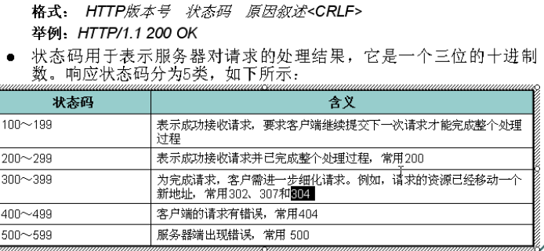

一、响应行
- 302找别人304,307拿缓存。403，没权限404，没资源500.服务器问题servlet方法:用302，location做请求重定向二、响应头
- Cache-Control:max-age=30
- Connection:keep-alive
- Content-Encoding:gzip
- Content-Type:text/html; charset=UTF-8 在conf的web里面写了Content-Type 的后缀名对应的格式
- Date:Fri, 28 Aug 2015 03:06:24 GMT
- Expires:Fri, 28 Aug 2015 03:06:54 GMT 告诉浏览器把回送的资源缓存多久， -1,0不缓存
- Server:Tengine 告诉浏览器服务器类型。
- Transfer-Encoding:chunked
- X-Cache:HIT from cn2-hbts-cu.hdslb.com
- refresh：多少秒刷新一次
- Content-Disposition：attachment;filename=1.jpg 下载的方式打开文件
- ETag:缓存头，实时更新
- Cache-Control：no-cache 不要缓存
- Pragma：no-cache 不要缓存
- 为了兼容以上全写。
三、Range头，可以断点下载 URL url = new URL("HTTP://www");HttpURLConnection conn = (HttpURLConnection) url.openConnection();conn.setRequestProperty("Range","bytes=5-");//tomcat5以后的服务器支持Range头。直接从5后下载。
URL url = new URL("HTTP://www");HttpURLConnection conn = (HttpURLConnection) url.openConnection();conn.setRequestProperty("Range","bytes=5-");//tomcat5以后的服务器支持Range头。直接从5后下载。